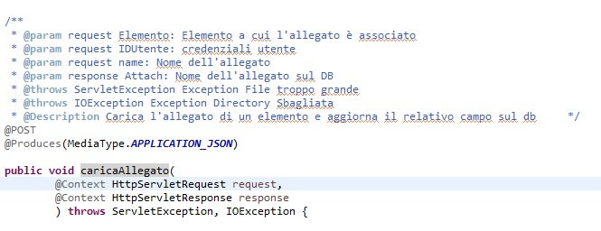
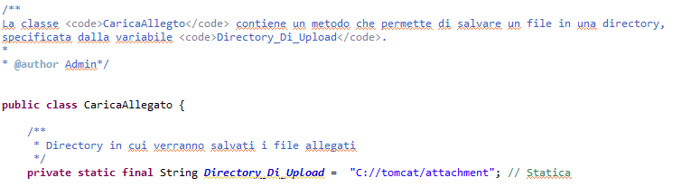
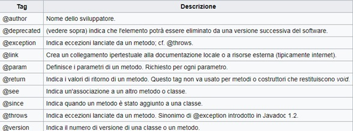
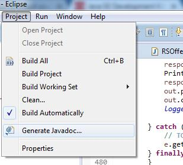
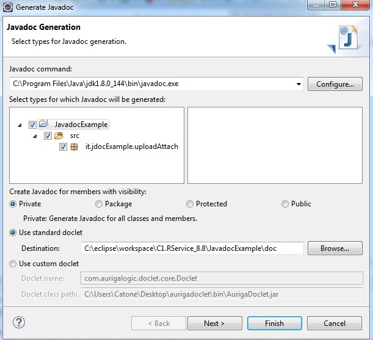
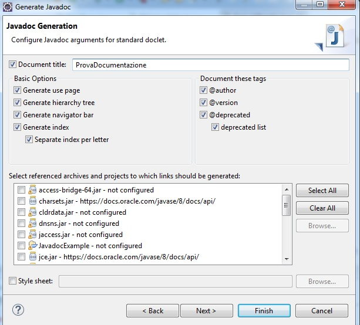
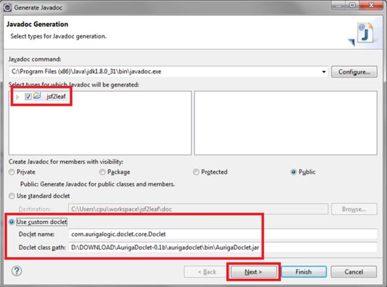
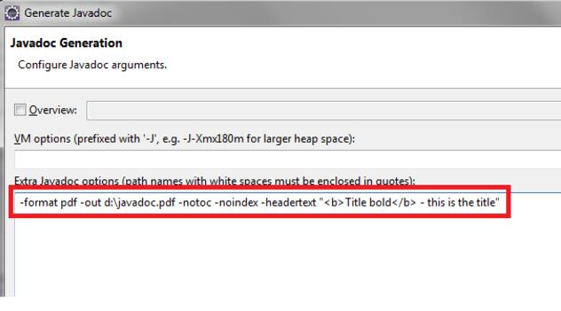

Tipologie di Documentazione
Javadoc e' un applicativo incluso nella JDK, utilizzato per generare documentazione automatica del codice Java (Lato Server). Tale dolcumentazione viene prodotta in HTML secondo lo standard, ma attualmente siamo in grado di produrla in qualsiasi formato richiesto. Vanno pero' valutate le varie alternative:
Documentazione in formato Word/pdf:
- Problema nel versionamento della documentazione: non possiamo accertarci che venga sempre consultata l'ultima versione disponibile;
- Problema della diffusione della documentazione: non possiamo controllare a chi venga divulgato il file;
- Ogni cambiamento di versione richiede di avvisare tutti gli interessati di un nuovo rilascio;
- Vanno utilizzate librerie esterne per generarla (Doclet Custom)
- E' di difficile consultazione rispetto alla versione HTML;
- E' possibile riportarlo su carta stampata e quindi presentarlo come documento ufficiale o documento a corredo del prodotto.
Documentazione in formato HTML:
- Non c'e' bisogno di utilizzare librerie esterne;
- Viene resa disponibile ad un link (quindi viene gestita come un sito web). In questo modo o viene consultata solamente l'ultima versione disponibile o puo' essere implementato facilmente un meccanismo di autenticazione per controllare gli accessi
- E' di facile consultazione, in quanto rappresenta lo standard della documentazione Java.
Il formato HTML risulta essere quindi di gran lunga l'opzione migliore per la generazione della Documentazione standard.
Creazione della documentazione
Prima di tutto va installata la JDK reperibile al seguente indirizzo link. Javadoc sara' automaticamente installato. Per poter creare la documentazione, va utilizzata la combinazione Alt + Shift + J una volta selezionata l'intestazione del metodo. Vengono generati automaticamente i Tag per i parametri contenuti nel metodo (@param) e i Tag per eventuali eccezioni (@Throws).
E' possibile inserire documentazione aggiuntiva tramite i caratteri /**Testo inserito nel javadoc */. Solitamente viene utilizzata per documentare variabili e per una descrizione generale delle classi. Di seguito esempi sulla documentazione di Classe e sulla documentazione delle variabili principali:
E' utile aggiungere anche una breve descrizione del metodo utilizzando sempre i caratteri speciali /***/. Oltre a quelli gia' citati, e' possibile utilizzare una serie di Tag aggiuntivi che sono gestiti correttamente nel Javadoc:
Tramite i tag @Author e @Version e' possibile inoltre tenere traccia dell'autore dell'ultima modifica e della versione della classe considerata. Questi due Tag vengono posizionati di solito a livello di classe e non a livello di metodo.
Export della documentazione
Per generare la documentazione da Eclipse, basta andare in Project -> Generate Javadoc.
Vanno successivamente selezionati i Package (Classi) da considerare nel Javadoc e va indicata la cartella di destinazione
Va infine inserito un titolo
Documentazione in PDF
Anche se non largamente utilizzata, e' possibile produrre documentazione in PDF. Una possibile soluzione e' l'utilizzo di AurigaDoclet, una doclet Javadoc che permette di generare documentazione in vari formati (tra cui il pdf). Questa Doclet permette anche l'inserimento di istruzioni da riga di comando (nell'ultima schermata di generazione della documentazione) per apportare modifiche allo stile del documento generato. I markup utilizzati rimangono gli stessi per la documentazione in HTML (@param, @throws,etc..), l'unica differenza si trova in fase di generazione:
Va selezionata l'opzione "Use custom doclet" e in doclet name va riportata la stringa: "com.aurigalogic.doclet.core.Doclet". Nel class path va invece indicato il percorso del Jar di AurigaDoclet precedentemente scaricato.
Nell'ultima schermata deve invece essere indicato il formato pdf (-format pdf) e la cartella destinazione della documentazione (-out cartella). A questo punto verra' generata la nostra documentazione in formato pdf.
Alternative al Javadoc
Alternative rilevanti al Javadoc non ce ne sono. Per poter personalizzare la documentazione, basta modificare la doclet standard utilizzata da Eclipse. In particolare, agendo sulla doclet, e' possibile modificare:
- Tag (Markup) utilizzati
- Colore e Stile della Documentazione
- Formato dell'output prodotto